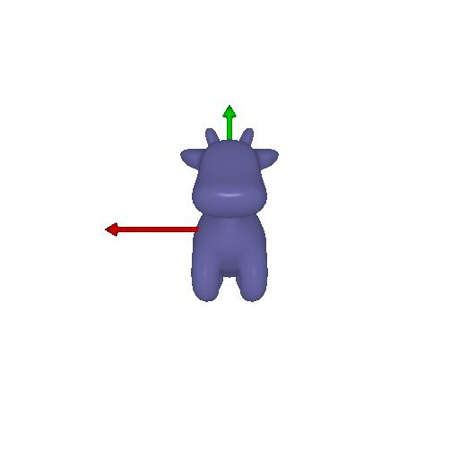
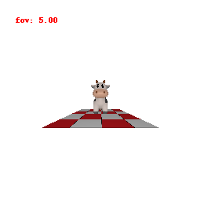
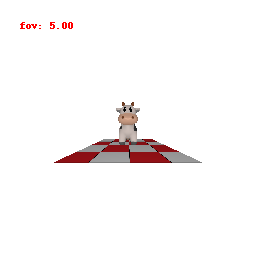
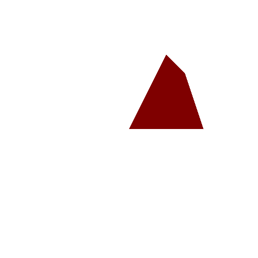
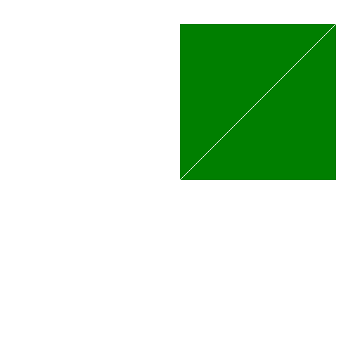
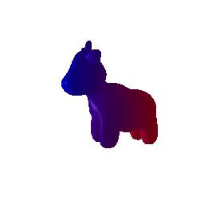
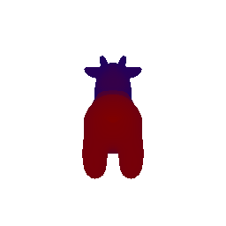
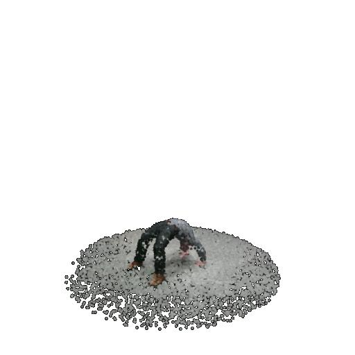

**HASRHAL SHIRSATH**
119247419, shirsath@umd.edu
CMSC 848F-Assigment 1
RENDERING BASICS WITH PYTORCH3D
CMSC 848F- Assignment 1
=====================================================================
1. Rendering your first mesh
--------------------------------------------------------------------

1 Practicing with Cameras
1.1 360-degree Renders
 1.2 Re-creating the Dolly Zoom

2 Practicing with Meshes
-----------------------------------------------------------------------------------------------
2.1 Constructing a Tetrahedron
1.2 Re-creating the Dolly Zoom

2 Practicing with Meshes
-----------------------------------------------------------------------------------------------
2.1 Constructing a Tetrahedron

This tetrahedron mesh has Faces: 4 and Vertices: 4
2.2 Constructing a Cube

The mesh has
Faces: 12
Vertices: 8
3. Re-texturing a mesh
-------------------------------------------------------------------------------------------


The choice of color for this mesh are
Color1: [0, 0, 1]
Color2: [1,0,0]
4. Camera Transformation
-------------------------------------------------------------------------------------------


Image 1: T_relative: In this translation, there is no translation along the x and y-axis. However, there is a translation along the Z-axis.
R_relative: The rotation is in the x-y plane, and the matrix represents a 90-degree clockwise rotation.

Image 2: T_relative: In this image, there is a translation along the X-axis.
R_relative: There is a rotation of -25 degrees in the x-axis.

Image 3: T_relative: In this translation, it is along the Z-axis, with no translation in the x and y-axes.
R_relative: In this case, there is no rotation about any axis, and thus it is an identity matrix.

Image 4: T_relative: The translation is in the positive Z-axis, thus making the object move forward.
R_relative: In the rotation part, there is a rotation about the Y-axis with a 90-degree counterclockwise rotation.
Secondly, there is a 180-degree counterclockwise rotation about the X-axis.
5 Rendering Generic 3D Representations
----------------------------------------------------------------------------------------

5.1 Rendering Point Clouds from RGB-D Images
5.2 Parametric Functions
5.3 Implicit Surfaces
Depending on the application rendering as a mesh and rendering as a point cloud each has it's own tradeoffs. However, below mentioned
are some considerations for rendering a mesh or rendering a point cloud:
1. Quality: Mesh: When considered quality it comes to the voxel size. Therefore meshes provide with smooth surfaces, better shading and lighting.
They provide much better rendering effect with detailed visuals for games, VR sets, and simulations.
Point Cloud:Point clouds on the other hand, have points that are well aligned with the surface and thus, result in improper fluidic
surfaces and fine details.
2. Real-time Computation: Mesh: Real-time computation for mesh is intensive when considered for complex models and may not be possible for every model.
Point Cloud: Point clouds are easy to manipulate to provide just the structure of the framework and thus, real time computation can be managed
easily by point cloud editing and point render manipulation.
3. User Convenience: Mesh: Meshes are time consuming and complex to work with tasks like, mesh generation, mesh optimisation, 3D modeling. Thus, editing meshes
is always a challenge.
Point Cloud: Point clouds are easy to generate. However, they take time to generate while keepign the model simple
to edit and can be worked around at higher speed like 3D scanner.